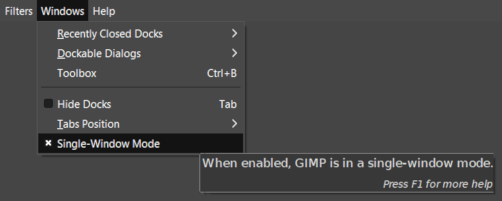
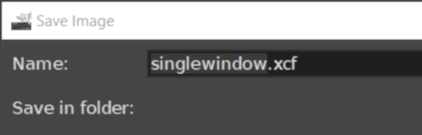
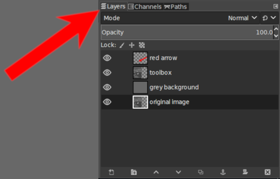

GIMP Class

GNU
Image
Manipulation
Program
GET STARTED
What's with all these windows?

Windows > Single-Window Mode
XCF wut?

Be chill. That's GIMP's file format.
I'm clicking and nothing is happening!
Every tool has specific options.
Layers is the most important feature.

Layers is the most important feature.
DO STUFF
Resizing Tools
Canvas vs. Image vs. Layer
Crop Tool [Shift+C]
Scale Tool [Shift+T]
Zoom Tool [Z]
Move Tool [M]
Selection Tools
Rectangle Tool [R]
Ellipse Tool [E]
Free Select Tool [F]
Paths Tool [B]
Paths Tool vs. Scissor Select Tool
Color Tools
Colors area and Colors menu
Fuzzy Select Tool [U]
Select by Color Tool [Shift+O]
Color Picker Tool [O]
Bob Ross Tools
Paint Brush Tool [P]
Pencil Tool [N]
Airbrush Tool [A]
Ink Tool [K]
Shani Rhys James Tools
Bucket Tool [Shift+B]
Erase Tool [Shift+E]
Text Tool [T]
Clone Tool [C]
QUESTIONS
bryan.n.jones@nashille.gov